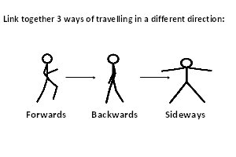

| Warm Up | Movement Development - diagram | Strand : KUFH | Duration : 5 - 10 | Teaching Points |
- Ask all children to spread out and find a space to stand in
- Ask the children to move on the spot in different ways - walk, jog, run, hop, star jumps
| - Aim to increase heart rate
- Build up speed of exercises gradually
- Perform the actions with good quality
|
| Progression | Teaching Points |
- Move around a set area in different ways - walk, jog, run, skip, sideways, hop
| - Look where you are going
- Head up
- Build up speed of exercises gradually
|
| To make activity easier |
- Give the children marker spots to put into a space and stand on to have a go at the activities
|
| Sequence | Link Together Different Ways of Travelling - Direction - diagram | Strand : AD | Duration : 15 - 20 | Teaching Points |
- Ask the children to create a sequence linking together different ways of travelling they have learnt in the lesson (or in previous lessons), changing the direction they move in
- The sequence should include:
- Linking together 3 ways of travelling in different directions
| - Encourage and highlight the good, imaginative use of direction
- Encourage smooth transition between the different methods of travelling
- Encourage the child to show control over the movement
- Encourage the use of good travelling techniques
- Make sure the actions are performed with quality
|
| To make activity harder |
- Increase the number of elements to be linked
|
| To make activity easier |
- Reduce the number of elements to be linked
|
| Analysis | Recognise how their body feels when still and when exercising - KUFH Level 1 |
- Before the activity ask the children how they are feeling. Ask them to sit quietly and place their hand on their chest and listen to their breathing
- How is your heart beating?
- Slow and gentle
- Does your body feel hot, normal or cold?
- During the activity ask the children to keep checking their chest (heart beat) and breathing
- Ask the children to stop and sit quietly placing their hand on their chest
- How is your heart beating now?
- Faster and louder
- Is your body colder, the same or hotter than before?
- Hotter than it was before
- How are you breathing now?
- Faster, louder and deeper
- Encourage the children to think about the changes in their heart beat, breathing and temperature before and during exercise by listening and feeling these changes
|
| Plenary | | What does travelling mean? | - Moving around from one place to another
| | What ways can you think of that you use to travel every day? | | | What different ways can you think of to travel? | - Walk, run, skip, hop, jump, slide
|
|
Evaluation
|
How did the children get on with the activities today?
- Most were successful and displayed a good understanding when questioned – Move on to the next theme in the unit
- Most struggled and were not successful at the activities – Recover this theme next week, perhaps with the focus at a lower level
|
| Movement Development |
Link Together Different Ways of Travelling - Direction |
Circle Stretch Sitting |
 |
 |
 |
|
|
|
|
|
|
|